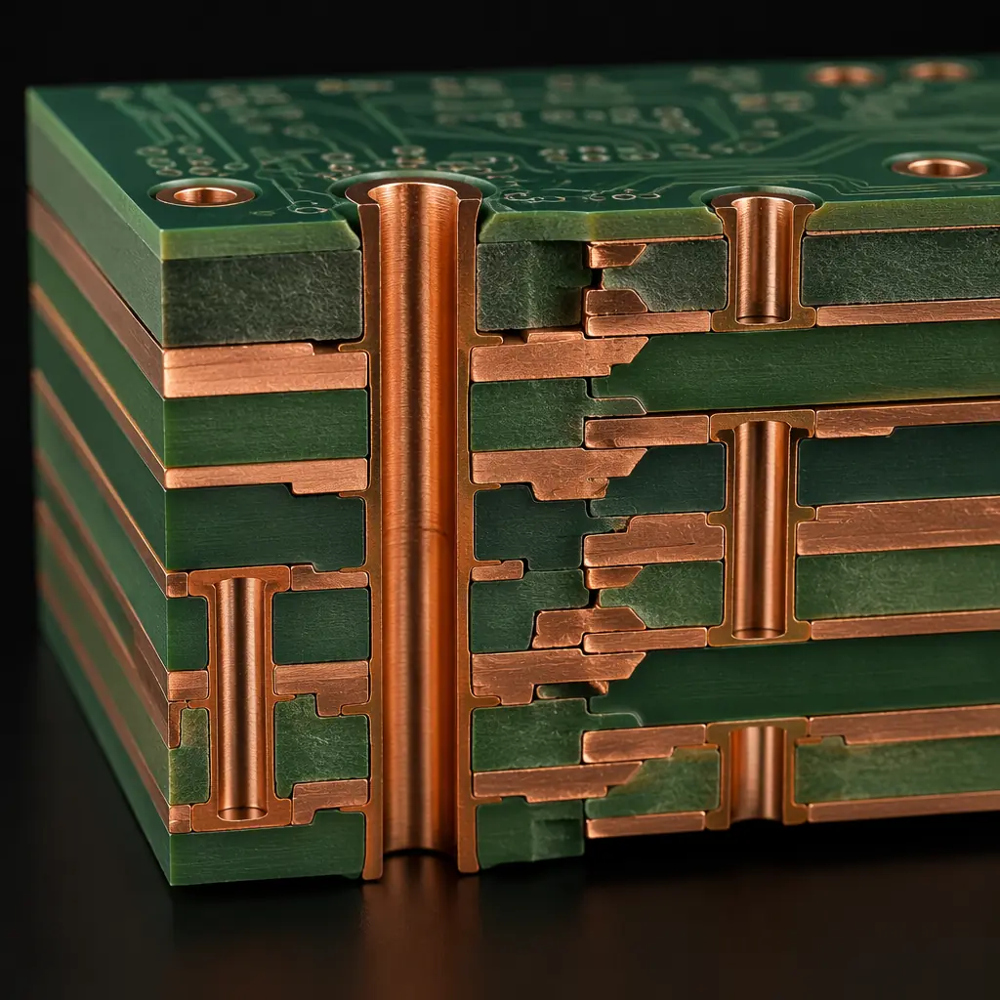
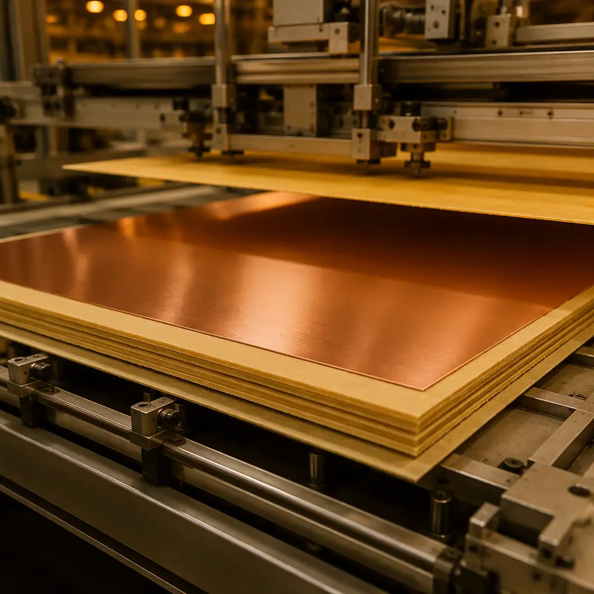
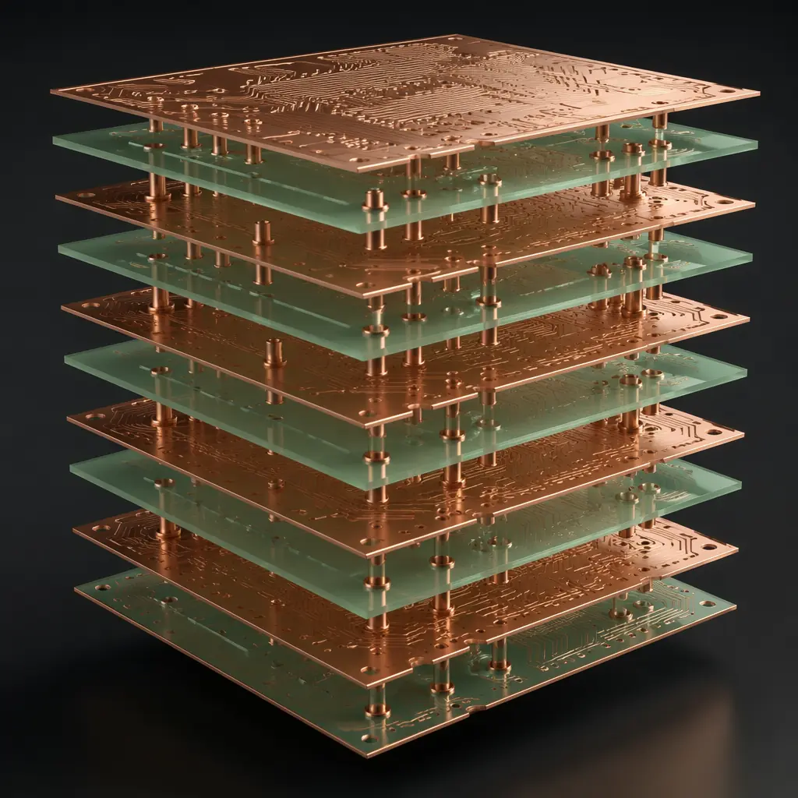

One of the most expensive mistakes in PCB procurement is over-specifying — or under-specifying — the layer count. A design that could run on 4 layers but is built on 8 wastes 35–50% in per-unit cost over a production run. Conversely, cramming high-speed signals and power distribution onto 2 layers creates EMC failures that cost far more to debug than an extra layer pair would have cost upfront. Making the right call requires understanding the actual cost curve, not just the conventional wisdom.
At Huaxing PCBA, we manufacture everything from 2-layer prototype boards to 32-layer high-density interconnect (HDI) panels with blind and buried vias across 8 SMT lines. This guide compresses our DFM team's layer-count recommendations — drawn from thousands of customer designs — into a practical decision framework you can apply before sending your next Gerber package. For the full stackup design specifics, see our PCB stackup design guide.

Why Layer Count Is the First Decision — Before Stackup, Before Materials
Layer count determines nearly everything downstream: material choice, via technology, minimum trace/space, impedance control strategy, and — most critically — which suppliers can build your board. A 16-layer design automatically disqualifies factories that max out at 12 layers. A 2-layer flex design may need a completely different supplier than your rigid boards. Getting this decision right at the RFQ stage prevents redesign loops, requotes, and 4–6 week schedule slips.
Many design teams jump straight to stackup planning without first asking: do I actually need this many layers? The answer often surprises them. Our DFM engineers routinely reduce layer counts by 2–4 layers during pre-production review — without compromising signal integrity — by optimizing plane assignments and routing density. Consult our 8 DFM rules that cut costs by 30% for additional pre-submission checks.
Key Takeaway: Layer count is a procurement decision as much as an engineering one. The cost difference between 6 and 8 layers is typically 25–35%, not the 10% many designers assume. Choose based on validated requirements, not design habits.
The Layer Count Cost Curve: Real Numbers Per Square Inch
PCB pricing is non-linear with layer count. Each additional layer pair requires an extra lamination cycle, drilling pass, and plating step — adding fixed process costs that don't scale down with board area. The table below shows relative costs for a standard FR-4, 1.6mm, HASL-Lead-Free finish board at medium volume (1,000 units).
| Layers | Relative Cost | Typical Turn Time | Supplier Availability | Common Applications |
|---|---|---|---|---|
| 1–2 | 1.0× (baseline) | 3–5 days | Universal | Power supplies, LED drivers, simple control boards |
| 4 | 1.8–2.2× | 5–7 days | Universal | Microcontroller boards, IoT sensors, consumer remotes |
| 6 | 2.8–3.5× | 7–10 days | Most suppliers | Industrial control, automotive body electronics, audio |
| 8 | 4.0–5.0× | 10–14 days | Mid-tier+ | Telecom basebands, FPGA boards, medical instruments |
| 10–12 | 6.0–8.0× | 14–21 days | Advanced only | Server backplanes, ATE load boards, aerospace |
| 14–16 | 9.0–12× | 18–28 days | Specialist | Data center switches, radar DSP, satellite payloads |
| 18–32 | 15–25× | 25–40+ days | Top-tier only | Supercomputing, 5G massive MIMO, military avionics |
These multipliers assume the same board area. In practice, higher layer counts often come with larger form factors and tighter tolerances, compounding the cost further. For a deeper dive into how these process costs break down, read our PCB manufacturing cost drivers guide.

When 2 Layers Are Enough — And When They're Not
Two-layer boards account for roughly 40% of global PCB volume, but many designs running on 2 layers today would benefit from moving to 4. The decision hinges on three factors:
Power Distribution Quality
A 2-layer board has no dedicated power and ground planes — you route power as traces. This creates voltage drop, ground bounce, and higher EMI. If your board has more than 3–4 different voltage rails or any analog section, 4 layers with a solid ground plane is almost always worth the cost. The improvement in signal quality alone often eliminates an entire EMC re-spin cycle — see our EMC/EMI compliance guide for the engineering rationale.
Signal Edge Rates, Not Just Clock Frequency
A common misconception: "My clock is only 16 MHz, so I don't need impedance control." But if your MCU has 1–2 ns rise times (typical for modern ARM Cortex-M devices), the signal harmonics extend well into the hundreds of MHz. Without a continuous return path (ground plane), these edges radiate. A 4-layer board provides that return path at roughly 1.8–2.2× the cost of 2 layers — far cheaper than an FCC re-test.
Routing Density and Board Area
If your 2-layer board is 80%+ routed and you still need to add connectors or features, moving to 4 layers often lets you shrink the board area by 30–40%. The smaller board area partially offsets the higher per-square-inch cost of 4 layers. Our panel utilization guide explains how board size reduction improves nesting efficiency.
4–8 Layers: The Sweet Spot for Most Professional Electronics
The 4-to-8-layer range covers roughly 70% of commercial and industrial electronics. Within this range, each additional layer pair adds a dedicated plane — either for power distribution, signal routing, or isolation. The key decision points:
4 Layers: The Modern Baseline
Standard stackup: Signal – Ground – Power – Signal (S-G-P-S). This gives you one solid reference plane for controlled impedance and one power plane for low-inductance distribution. Suitable for mixed-signal designs with proper partitioning. If you're designing anything with DDR memory, USB 3.0, or an ADC above 12 bits, start at 4 layers. For the materials that work best at this layer count, see our PCB materials guide.
6 Layers: When You Need Two Routing Layers or Split Planes
Typical stackup: S – G – S – S – P – S. This provides two internal routing layers plus dedicated power and ground planes. The extra routing layer is essential when you have a BGA package with >200 pins or need to separate analog and digital routing on different layers. BGA escape routing is the single most common reason our customers move from 4 to 6 layers — read our BGA assembly guide for the manufacturing side of that equation.
8 Layers: The High-Speed Entry Point
Stackup options multiply at 8 layers. A common arrangement: S – G – S – P – P – S – G – S, providing two solid ground references and two power planes. This is the minimum we recommend for any design with DDR4, PCIe Gen 3+, or multi-gigabit SerDes lanes. The dual ground planes provide clean return paths for high-speed signals regardless of which routing layer they occupy — critical for signal integrity above 100 MHz.

10–16+ Layers: When Complexity Justifies Cost
Above 10 layers, each additional layer starts to require more advanced manufacturing techniques — sequential lamination, laser-drilled microvias, and tighter registration tolerances. These are not incremental upgrades; they're step changes in both capability requirements and cost.
Signal Isolation for Mixed-Technology Boards
Boards combining high-speed digital (PCIe Gen 4/5, 100G Ethernet), sensitive analog (24-bit ADC front-ends), and high-current power (50A+ phases) demand layer counts of 12+ simply to provide adequate isolation. Each domain needs its own reference planes — sharing a ground plane between a 16 GHz SerDes lane and a precision analog section is asking for noise coupling. For mixed-signal design strategies, see our mixed-signal PCB design guide.
BGA Fanout with >1000 Pins
Large FPGAs and SoCs with 1,000+ balls at 0.8mm pitch or finer often require 12+ layers just to escape all signals. At this density, you're likely using blind and buried vias, which add sequential lamination steps. The via technology choice becomes as important as the layer count itself — consult our via technology guide for the full breakdown of blind, buried, and via-in-pad approaches.
Thermal Management Through Layer Stack
At 14+ layers, internal copper planes serve double duty: electrical reference and thermal spreader. Designs with multiple high-power components (GaN FETs, high-current PoL converters) can use internal 2oz–4oz copper planes to conduct heat laterally, reducing hot-spot temperatures by 15–25°C compared to relying on top-layer pours alone. For the full thermal design strategy, see our thermal management guide.
Procurement Tip: When requesting quotes for 12+ layer boards, always specify whether you need sequential lamination or standard lamination. Sequential lamination adds 40–60% to the per-panel cost and 10–15 additional days of lead time. Many designs can be restructured to avoid it — ask your supplier's DFM team before finalizing.
How to Decide: A 5-Question Decision Framework
Before sending your next Gerber package, answer these five questions. If you answer "yes" to any, you likely need more layers than your current design uses:
Does your design have more than 3 voltage rails?
Each additional rail needs either a dedicated copper pour (costs board area on 2 layers) or a dedicated power plane (costs a layer). At 4+ rails, a power plane layer is almost always cheaper than the board area required for wide pours. Our copper weight selection guide covers the current capacity side of this equation.
Are any signals above 50 MHz or with rise times below 2 ns?
These signals need controlled impedance with a continuous reference plane. On 2 layers, you can create coplanar waveguide structures, but they're sensitive to manufacturing variation and consume routing space. 4+ layers with a dedicated ground plane is the reliable path — see our impedance control guide for the ±5% tolerance we maintain.
Are you using BGA packages with more than 200 balls?
BGA escape routing is the #1 driver of layer count escalation. A 484-ball BGA at 1.0mm pitch typically needs 4 routing layers alone — add power and ground planes and you're at 6–8 layers minimum. Our BGA assembly guide details the complete manufacturing process.
Do you need to pass conducted/radiated emissions testing?
FCC Part 15, CISPR 32, and MIL-STD-461 all become dramatically easier to pass with solid ground planes. A 4-layer board with a continuous ground plane typically shows 10–15 dB lower radiated emissions than the same circuit on 2 layers — often the difference between pass and fail. Our EMC/EMI compliance guide covers design-for-compliance strategies.
Is your routing density above 70% on your current layer count?
If your autorouter or manual routing is at 70%+ completion and you still have unrouted nets, adding layers is cheaper than increasing board area. A larger board area on the same layer count increases per-unit material cost and reduces panel utilization — often netting zero savings. Use our panelization cost optimization guide to compare scenarios.
Layer Count and Your Supplier: Why Capability Matters as Much as Cost
Not every PCB supplier can build every layer count. As you move up the stack, supplier qualification becomes more selective:
Registration Tolerance Tightens with Layers
A 4-layer board might tolerate ±100µm layer-to-layer registration. At 16 layers, that tolerance drops to ±50µm — and misregistration between any two layers can cause open circuits in high-aspect-ratio vias. This requires laser-direct imaging (LDI) equipment and climate-controlled lamination environments that not all factories maintain. Verify your supplier's capability before placing a high-layer-count order. Our supplier audit checklist includes the key questions to ask.
Sequential Lamination Adds Process Steps — and Risk
Boards requiring blind/buried vias need multiple lamination cycles. Each cycle adds 4–6 hours of processing and exposes the partially-completed board to handling and contamination risk. A supplier experienced with sequential lamination will have dedicated cleanroom areas for each lamination stage and documented process controls — don't assume every factory quoting 12+ layers has this infrastructure.
Aspect Ratio Limits Your Layer Count for a Given Board Thickness
The plated through-hole aspect ratio (board thickness ÷ hole diameter) is typically limited to 10:1 for reliable plating. A 1.6mm thick board with 0.2mm vias hits this limit quickly. Higher layer counts at the same board thickness require smaller vias — which require laser drilling — which requires different equipment. This is the physical constraint that determines whether a given design is manufacturable at a given supplier, regardless of cost. Our laser vs mechanical drilling comparison covers the tradeoffs.
Summary: Choose Layers Like a Procurement Engineer
Layer count is not a free variable — it's the single largest cost driver in PCB fabrication, and it locks in your supplier options, lead time, and yield rates before you've even chosen a material. The right number is the minimum that satisfies your signal integrity, power distribution, and routing density requirements with a comfortable margin — not the number your last design used, and not the number your competitor's datasheet shows.
At Huaxing PCBA, our DFM team reviews layer count as the first check in every pre-production engineering review. We've helped customers reduce 10-layer designs to 8 layers without performance loss, saving 30% on per-unit PCB cost over 5,000-unit production runs. Start with our stackup design guide for the next step after layer count, or if you're evaluating suppliers for a high-layer-count project, use our supplier RFP framework to compare capabilities apples-to-apples.
Ready to get a quote on your multi-layer design? Contact our engineering team with your layer count, material preference, and quantity — we'll return a detailed quotation with DFM feedback within 24 hours.